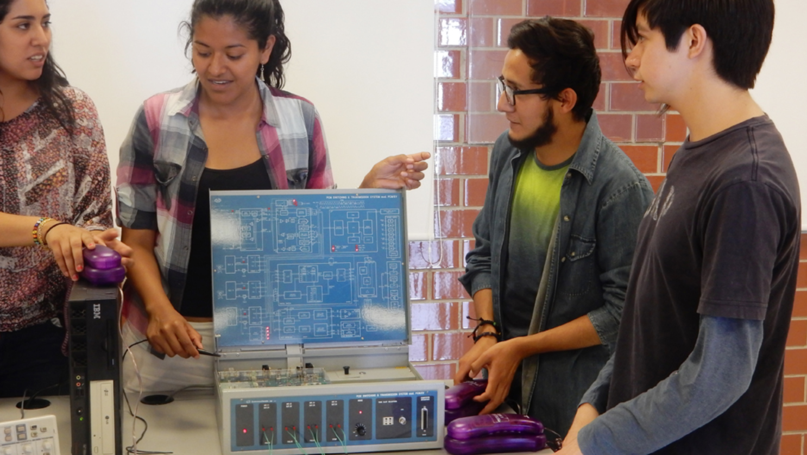
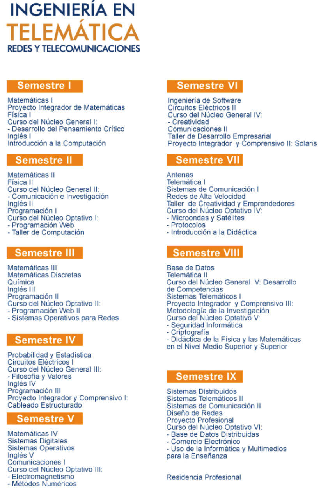
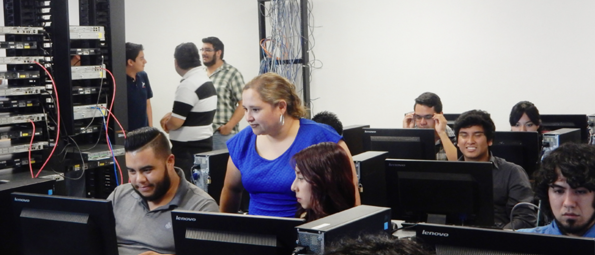

DESCRIPCIÓN GENERAL
La carrera de Ingeniería en Telemática forma a los estudiantes en redes de telecomunicaciones, tecnologías de la información y sistemas embebidos, abordando desde redes locales y celulares hasta sistemas de microondas y el internet de las cosas. El programa educativo se divide en tres ciclos que permiten obtener títulos progresivos, culminando con el grado de Ingeniero en Telemática.
Objetivos
- Capacidad de crear e identificar soluciones para el transporte de información digital (sistemas de comunicación o redes)
- Uso y desarrollo de redes para dispositivos fijos o móviles
- Aplicación de métodos de investigación para identificar problemas y desarrollar soluciones de manera independiente
- El dominio del idioma inglés; y a adquisición de bases teóricas para continuar con estudios de postgrado
Misión del programa
El Programa Educativo de la carrera de Ingeniería en Telemática está comprometido con la excelencia en la formación integral y humana, y con el aprendizaje, el desarrollo y aplicación del conocimiento en los campos de las telecomunicaciones y la informática. Esta comprometido con la sociedad para mantener una oferta educativa pertinente en el área y desarrollar investigación aplicada involucrando alumnos en la solución de problemas de la sociedad.
Visión del programa
- Egresados que tienen en su haber competencias pertinentes a las necesidades de su entorno, y son reconocidos en el ámbito laboral por su alto desempeño y calidad personal
- Un porcentaje significativo de ellos realiza estudios de posgrado en el país o en el extranjero
- Contarán con certificaciones de importancia en el área, actuales y con reconocimiento internacional
- Estarán certificados en el dominio del idioma inglés por el British Council
- Tendrán experiencia práctica adquirida en los laboratorios, en el estudio de casos y en su estancia profesional y, serán hábiles en el manejo de las nuevas tecnologías y reconocerán el proceso de aprendizaje como una necesidad permanente
Plan de estudios

Recursos
Edificio del Centro de Nuevas Tecnologías
- Laboratorio de Redes (CCNA-Cisco)
- Laboratorio de Telecomunicaciones
- Laboratorio de Tecnologías SUN
- Centro de Software Libre
- Laboratorio de Arquitectura de Computadoras
- Laboratorios especializados: Ingeniería de Software, Seguridad Informática, Comercio, Electrónico, Procesamiento Digital
- Software: Maple, Matlab, Interactive Physics, IBM Rational Rose, Oracle, Cisco Packet Tracer, Microsoft Campus Agreement, Software para el aprendizaje del Inglés, Solaris, Java, entre otros
Logros
- Encuentro de jóvenes investigadores del Estado de San Luis Potosí
- Encuentro nacional de jóvenes investigadores de México
- Premio al reto nacional de la Agencia Espacial Mexicana
- Premio en evento Cisco Netriders
- Congreso Internacional de Telemática en la Universidad Autónoma de Colima
- Becas a la excelencia académica
- Encuentro internacional para sistemas de comunicaciones inalámbricas en los países de Perú, Argentina, Venezuela y México
- Encuentro de jóvenes universitarios en Cisco Day
Perfil de egreso
El Ingeniero en Telemática combina los conocimientos y habilidades adquiridos en los campos de las telecomunicaciones y la informática, para analizar, diseñar, desarrollar e implantar soluciones que permitan la transmisión, procesamiento, almacenamiento y utilización de la información que se maneja en la operación y administración económica y eficiente de redes telemáticas, así como en su mantenimiento y en actualización de la tecnología existente.
Campo de trabajo
- La industria de las telecomunicaciones
- La industria de las tecnologías de la información
- La industria de la electrónica
- Empresas de cualquier sector que demanden o requieran la gestión de infraestructura de telecomunicaciones y de redes, así como la gestión de servicios de las tecnologías de la información.
- Instituciones publicas